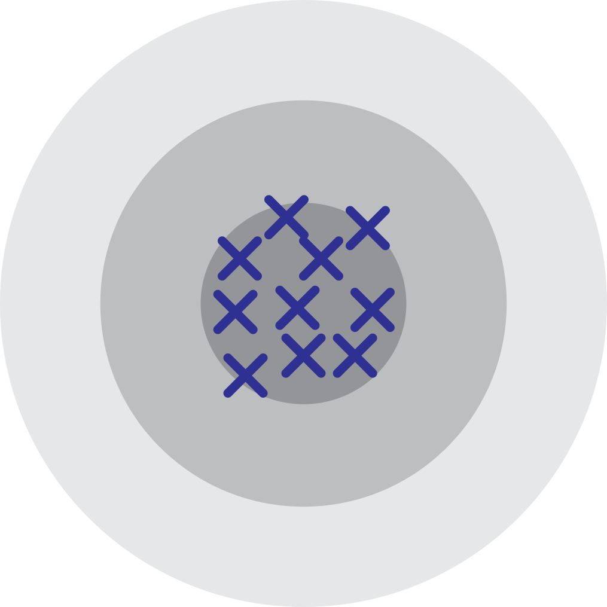

Midterm Review
PSTAT 120B, Spring 2025, with Dr. Brian Wainwright
Department of Statistics and Applied Probability; UCSB
May 6, 2025
\[ \newcommand\R{\mathbb{R}} \newcommand{\N}{\mathbb{N}} \newcommand{\E}{\mathbb{E}} \newcommand{\Prob}{\mathbb{P}} \newcommand{\F}{\mathcal{F}} \newcommand{\1}{1\!\!1} \newcommand{\comp}[1]{#1^{\complement}} \newcommand{\Var}{\mathrm{Var}} \newcommand{\SD}{\mathrm{SD}} \newcommand{\vect}[1]{\vec{\boldsymbol{#1}}} \newcommand{\Cov}{\mathrm{Cov}} \newcommand{\Corr}{\mathrm{Corr}} \usepackage[makeroom]{cancel} \newcommand{\iid}{\stackrel{\mathrm{i.i.d.}}{\sim}} \newcommand{\probto}{\stackrel{\mathrm{p}}{\longrightarrow}} \newcommand{\distto}{\stackrel{\mathrm{d}}{\longrightarrow}} \]
Roadmap for Today
Go through some slides (including some interactive problems)
Work through some problems together (on the worksheet; copies can be found at the front of the room)
Disclaimer
I have not seen the exam yet, so I do not know exactly what will or will not be on it. Just because something does or does not show up on these slides doesn’t mean it is guaranteed to show up / not show up on the exam.
Disclaimer
This review is not intended to be comprehensive; I encourage you to consult the lecture notes, textbook, homework, and your own notes.
Transformations
Univariate Transformations
General Framework
Goal: Univariate Transformations
Given a random variable X ~ fX(x), we seek the distribution of U := g(X) for some real-valued function g.
- Three things uniquely characterize a distribution:
- Its CDF
- Its PDF
- Its MGF
Univariate Transformations
CDF Method
First idea: find the CDF FU(u).
Often a three-step procedure:
- Write \(F_U(u) := \Prob(U \leq u) = \Prob(g(X) \leq u)\)
- Manipulate the event \(\{g(X) \leq u\}\) to be of the form \(\{X \in B_U\}\) for some set Bu
- Use the PDF of X (which is assumed to be known!) to evaluate \(\Prob(B_u)\), to find the CDF FU(u) of U.
Univariate Transformations
CDF Method
Example 1
Let X ~ Exp(β) for some β > 0, and define Y := c X for some c > 0. Use the CDF method to identify the distribution of Y by name, including any/all relevant parameter(s).
Univariate Transformations
Method of Transformations
- If g is strictly monotonic over the support of X, then \[ f_U(u) = f_X[g^{-1}(u)] \cdot \left| \frac{\mathrm{d}}{\mathrm{d}u} g^{-1}(u) \right| \]
Caution
This method can only be used if the following assumptions hold:
The underlying transformation is univariate (i.e. a function of only one random variable)
The underlying transforamtion is strictly monotonic
Univariate Transformations
Method of Transformations
Example 1 (revisited)
Let X ~ Exp(β) for some β > 0, and define Y := c X for some c > 0. Use the Method of Transformations to identify the distribution of Y by name, including any/all relevant parameter(s).
Univariate Transformations
Method of MGFs
- A useful fact is that MGFs uniquely determine distributions.
- For example, if I tell you X has MGF \(M_X(t) = e^{t^2}\), then you can automatically conclude that \(X \sim \mathcal{N}(0, 2)\).
- Two useful facts about MGFs:
- \(M_{aX + b}(t) =\)
- For independent X and Y, \(M_{X + Y}(t) =\)
- In light of these, we see that the MGF method is particularly useful when our transformation involves a linear combination of independent random variables.
Univariate Transformations
Method of MGFs
Example 1 (revisited)
Let X ~ Exp(β) for some β > 0, and define Y := c X for some c > 0. Use the MGF Method to identify the distribution of Y by name, including any/all relevant parameter(s).
Multivariate Transformations
Outline
When it comes to multivariate transformations (i.e. transformations of multiple random variables), there often is not a one-size-fits-all approach.
A safe bet is usually the CDF method, though the corresponding integrals may be intractable.
If the transformation is a linear combination of independent random variables, then the MGF method might be a good bet.
We also saw some examples about minima and maxima; take a look through the lecture slides for those.
Multivariate Transformations
Example
Example 2
Let \(X, Y \iid \mathrm{Exp}(\beta)\) for some \(\beta > 0\). Using whichever method you feel is most appropriate, identify the distribution of:
- \(S := (X + Y)\)
- \(Z := \min\{X, Y\}\)
Inferential Statistics
Sampling
General Framework

Goal: to make inferences about a population parameter.
To do so, we take random samples from the population.
A statistic is a function of a random sample: \(T := T(X_1, \cdots, X_n)\)
- Statistics, therefore, are random variables; their distributions are called sampling distributions
Sampling
Example: Cats!

Sampling
Example: Cats!

Sampling
Example: Cats!

Sampling
Example: Cats!

Sampling
Notation
With this example, we can highlight an important distinction.
Let Yi denote the weight of a randomly-selected cat. Random or deterministic?
- Random.
Let yi denote the weight of a specific cat (e.g. Kitty). Random or deterministic?
- Deterministic.
Denote \(\vect{Y} := \{Y_i\}_{i=1}^{n}\) to be our random sample; let \(\vect{y} := \{y_i\}_{i=1}^{n}\) be a realization (aka an observed instance) of our sample \(\vect{Y}\).
Sampling
Normal Population
- Two common statistics that arise frequently are the sample mean and sample variance, defined as \[ \overline{X}_n := \frac{1}{n} \sum_{i=1}^{n} X_i; \qquad S_n^2 := \frac{1}{n - 1} \sum_{i=1}^{n} (X_i - \overline{X}_n)^2 \]
Theorem
Let \(X_1, \cdots, X_n \iid \mathcal{N}(\mu, \sigma^2)\). Then:
- \(\overline{X}_n \sim \mathcal{N}\left( \mu, \ \frac{\sigma^2}{n} \right)\)
- \(\left( \frac{n - 1}{\sigma^2} \right) S_n^2 \sim \chi^2_{n - 1}\)
Review: The Gamma Distribution
viewof alph = Inputs.range(
[0.2, 10],
{value: 2, step: 0.1, label: "α:"}
)
viewof bet = Inputs.range(
[0.2, 3.1],
{value: 1, step: 0.01, label: "β:"}
)jstat = require("jstat")
plt_pdf = Plot.plot({
width: 700,
height: 300,
color: {
legend: true
},
x: {
label: "x",
axis: true
},
y: {
label: "f(x)",
//axis: false,
//domain: [0, d3.max(pdfvals.map(d => d.pdf))]
},
marks: [
Plot.ruleY([0]),
Plot.ruleX([0]),
Plot.line(pdfvals, {x: "x", y: "pdf", stroke : "blue", strokeWidth: 4})
]
})
pdfvals = {
const x = d3.range(0, 12, 0.01);
var pdf;
pdf = x.map(x => ({x: x, pdf: jstat.gamma.pdf(x, alph, bet)}));
return pdf
}Review: The \(\chi^2_{\nu}\) distribution
plt_pdf2 = Plot.plot({
width: 700,
height: 300,
color: {
legend: true
},
x: {
label: "x",
axis: true
},
y: {
label: "f(x)",
//axis: false,
//domain: [0, d3.max(pdfvals.map(d => d.pdf))]
},
marks: [
Plot.ruleY([0]),
Plot.ruleX([0]),
Plot.line(pdfvals2, {x: "x", y: "pdf", stroke : "blue", strokeWidth: 4})
]
})
pdfvals2 = {
const x = d3.range(0, 12, 0.01);
var pdf;
pdf = x.map(x => ({x: x, pdf: jstat.gamma.pdf(x, nu/2, 2)}));
return pdf
}Sampling
Convergence in Distribution
Definition: Convergence in Distribution
A sequence \(\{X_n\}_{n \geq 1}\) of random variables is said to converge in distribution to another random variable \(X\) if, for every point \(x\) at which the CDF of \(X\) is continuous, \[ \lim_{n \to \infty} \Prob(X_n \leq x) = \Prob(X \leq x) \] in which case we write \[ X_n \distto X \]
Sampling
Central Limit Theorem
Central Limit Theorem
Let \(X_1, \cdots, X_n\) denote an i.i.d. sample from a distribution with mean \(\mu\) and finite variance \(\sigma^2 < \infty\). Then \[ \frac{\sqrt{n}(\overline{X}_n - \mu)}{\sigma} \distto \mathcal{N}(0, 1) \] which we can sometimes write as, for sufficiently large n, \[ \overline{X}_n \stackrel{\cdot}{\sim} \mathcal{N}\left( \mu , \ \frac{\sigma^2}{n} \right) \sim \mathcal{N}\left( \E[Y_i], \ \frac{\Var(Y_i)}{n} \right) \]
Estimation
General Framework
The goal of estimation is, as the name suggests, to use samples (specifically, sample statistics) to estimate the value of a population parameter.
Three key terms:
- Estimand: another word for the parameter we are trying to estimate.
- Estimator: a statistic being used to estimate the estimand.
- Another way to think about this: a “rule” used to estimate the parameter.
- Estimate: a particular realization (i.e. observed instance) of an estimator.
Estimation
Example
Example
A vet wishes to estimate the true weight of all cats in the world. She takes a sample of 10 cats, and finds their average weight to be 9.12 lbs.
The estimand is the true average weight of all cats in the world (which we can call µ).
The estimator is the sample mean: we are using sample means to estimate µ.
The estimate in this scenario is 9.12 lbs, as this is a particular realization of our estimator.
Estimation
Goodness-of-Fit
- Given that there are potentially many estimators we could use to estimate a particular estimand, it’s useful to develop a metric of how well a particular estimator is performing (or, equivalently, on how to compare the performance of two estimators).
Definition: Bias
The bias of an estimator \(\widehat{\theta}_n\) being used to estimate a parameter \(\theta\) is defined to be \[ \mathrm{Bias}(\widehat{\theta}_n) := \E[\widehat{\theta}_n] - \theta \] The estimator is said to be unbiased if its bias is zero; i.e. if \(\E[\widehat{\theta}_n] = \theta\).
- An unbiased estimator, “on average, gets it right”.
Estimation
An Analogy
Unbiasedness, however, is often not enough. To motivate why, let’s take a look at an analogy.
An analogy is often drawn between estimation and hitting a bullseye.
- The bullseye is akin to our estimand, and estimates are represented by shots fired at the target.
- The estimator is, therefore, akin to the marskperson.
An unbiased estimator is analogous to a marksperson for whom the average location of shots is the bullseye.
Estimation
Two Markspersons
- Which of the following markspersons are “better”?

Marksperson 1

Marksperson 2
Estimation
Mean Squared-Error (MSE)
So, unbiasedness is not enough; we’d also like small variance.
To that end, we introduce the mean squared-error (MSE) of an estimator: \[ \mathrm{MSE}(\widehat{\theta}_n) := \E\left[(\widehat{\theta}_n - \theta)^2 \right] \]
Bias-Variance Decomposition
\[ \mathrm{MSE}(\widehat{\theta}_n) := \mathrm{Bias}^2(\widehat{\theta}_n) + \Var(\widehat{\theta}_n) \]
- Question: should a “good” estimator have very high or very low MSE?
Estimation
Consistency
- Another useful property is that of consistency.
Definition: Consistency
An estimator \(\widehat{\theta}_n\) for a parameter \(\theta\) is said to be consistent, notated \[ \widehat{\theta}_n \probto \theta \] if, for every \(\varepsilon > 0\), \[ \lim_{n \to \infty} \Prob\left( |\widehat{\theta}_n - \theta| \leq \varepsilon \right) = 1 \] or, equivalently, \[ \lim_{n \to \infty} \Prob\left( |\widehat{\theta}_n - \theta| > \varepsilon \right) = 0 \]
Estimation
Consistency
\(|\widehat{\theta}_n - \theta|\) essentially measures the distance between \(\widehat{\theta}_n\) and \(\theta\).
The event \(\{|\widehat{\theta}_n - \theta| \leq \varepsilon\}\) is, therefore, the event that “the distance between \(\widehat{\theta}_n\) and \(\theta\) is small”
- Equivalently: the event that “\(\widehat{\theta}_n\) is very close to \(\theta\)”
The definition of consistency asserts that this probability goes to one as the sample size increases.
- That is, as the sample size increases, we become more and more certain that \(\widehat{\theta}_n\) will be very close to \(\theta\).
Estimation
Consistency
Theorem
Suppose \(\widehat{\theta}_n\) is an unbiased estimator for \(\theta\). If \(\Var(\widehat{\theta}_n) \to 0\) as \(n \to \infty\), then \(\widehat{\theta}_n\) is a consistent estimator for \(\theta\).
Caution
We can only apply this theorem if our estimator is unbiased!!!
Corollary: Weak Law of Large Numbers (WLLN)
If \(Y_1, \cdots, Y_n\) are i.i.d. from a distribution with mean \(\mu\) and finite variance \(\sigma^2 < \infty\), then \[ \left( \frac{1}{n} \sum_{i=1}^{n} Y_i \right) \probto \E[Y_i] =: \mu \]
Estimation
Consistency
Take a look at the Week 5 lecture slides (specifically, Theorem 9.2) for more properties on consistency.
There is one additional theorem I’d like to highlight (sometimes called the Continuous Mapping Theorem, or CMT):
Continuous Mapping Theorem (CMT):
If \(\widehat{\theta}_n\) is a consistent estimator for \(\theta\), then \(g(\widehat{\theta}_n)\) is a consistent estimator for \(\theta\) provided that the function \(g\) is continuous.
Example 3
If \(X_1, \cdots, X_n\) denotes an i.i.d. sample from a population with mean \(\mu\) and finite variance \(\sigma^2\), propose a consistent estimator for \(\mu^2\) and show that your estimator is consistent.
Estimation
Consistency vs. Unbiasedness
A natural question is: how are consistency and unbiasedness related?
Question: are all consistent estimators unbiased?
Question: are all unbiased estimators consistent?

PSTAT 120B Sp25; Discussion Section 5, © Ethan P. Marzban